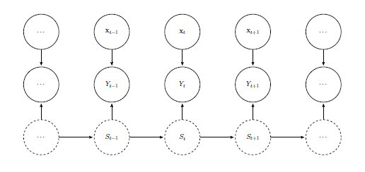

Markov-switching (MS) models represent a flexible modelling framework in which an unobserved state variable determines the membership of observations to distinct regimes. Conditional on the regime, the data-generating mechanism can be described using relatively simple stochastic models. For comprehensive treatments of Markov-switching models, see Frühwirth-Schnatter (2006) and Zucchini et al. (2017). The picture below is a schematic representation of the Markov-switching model.

The MS model is specified by two processes:
Latent stochastic process
During the estimation process, the transition probabilities are modelled via (multi-) logit link function, that is $\nu_{jk} = {\rm logit}\left(\delta}_{jk} \right)$, for $j = 1,\ldots, K$, and $k \in \tilde \omega_j$, with $\tilde \omega_j = \omega_j \setminus \{j\}$.
Observable stochastic process
For the observable process $\{Y_t\}_{t \geq 1}$, we assume that (i) the $Y_t$'s are conditionally independent given $S_t$ and the covariate information $\mathbf x_t$, and (ii) the conditional (to the state) distribution follows a Normal distribution $Y_t|S_t=k; \mathbf{x}_t \sim \mathcal{N}(\mu_{kt},\sigma_{k})$, for $k=1, \ldots, K$. We let the regime-specific location parameters $\mu_{kt}$ to vary as a function of the covariate, while the scale parameters $\sigma_k$ to be covariate-free, for $k=1, \ldots, K$. In perticular the location parameters $\mu_{kt}$ are modelled in a semi-parametric way as \begin{equation} \label{eq:lpGENERAL} \mu_{kt} = \mu_{k,year(t)} + \sum_{i=1}^{r}b_i(doy_{t}) u_{k}\,, \quad k = 1,\ldots, K,\,\, t = 1, \ldots T, \end{equation} whereBayesian Inference
We carry out Bayesian inference on the parameter vector $\boldsymbol \beta = (\boldsymbol \mu^\top_{1, year},\mathbf u^\top_1, \ldots, \boldsymbol \mu^\top_{K, year}, \mathbf u_K, {\boldsymbol \gamma}^\top, {\boldsymbol \nu}^\top)^\top\,$ with $\boldsymbol \mu_{k, year} = (\mu_{k, 1}, \ldots, \mu_{k, n_{year}})$, where $n_{year}$ is the total number of year, and $\mathbf u_k = (u_{k1}, \ldots, u_{kr})$, for $k = 1, \ldots, K$; while the vectors ${\boldsymbol \gamma}$ and ${\boldsymbol \nu}$ includes the $\gamma_j$ and $\nu_{jk}$ parameters, for $j = 1,\ldots, K$, and $k \in \tilde \omega_j$.
Following Hamilton (1994), the log-likelihood is \begin{equation}\label{eq:llik} \ell(\boldsymbol \beta)=\sum_{t=1}^{T} {\rm log} f_{Y_t}(y_t|{\mathcal{\tilde I}}_{t}; \boldsymbol \beta)=\displaystyle \sum_{t=1}^{T}{\rm log}\sum_{j=1 }^{K} \sum_{k \in \omega_j} \delta^{t}_{jk} \pi^{t-1}_{j} f_{Y_t|S_t}(y_t|s_t=k; \mathbf X_{t\cdot}, \boldsymbol \beta_{k}) \,, \nonumber \end{equation} where $\pi^{t}_{j} = {\rm Pr}(S_t=j| \mathcal{I}_{t}; \boldsymbol \beta)$ are the filtered state probabilities, that is, \begin{eqnarray*}\label{eq:filtProb} \pi^{t}_{j} = \sum_{k \in \omega_j}^{} \delta^{t}_{kj} \pi^{t-1}_{k} f_{Y_t|S_t}(y_t|s_t=j; \mathbf X_{t\cdot}, \boldsymbol \beta_{j}) \big/ f_{Y_t}(y_t| \mathcal{\tilde I}_{t}; \boldsymbol \beta)\,, \quad j=1, \ldots, K, \end{eqnarray*} with $\mathcal{I}_{t}$ the information available up to time $t$, and $\mathcal{\tilde I}_{t}= \mathcal{I}_{t} \setminus \{y_t\}$.
Priors
The yearly random effects are build hierarchically as $$\mu_{k,year(t)} = \mu_k + \sigma_{k,year} z_{k,year}$$ where
For the remaining model parameters, we set:
Notation used above:
Simulations, model checking and evaluation
Model simulations are carried out using Markov Chain Monte Carlo (MCMC) methods, in particular through the No-U-Turn Sampler extension to the Hamiltonian Monte Carlo (Hoffman and Gelman, 2014), as implemented in the probabilistic programming language Stan (2014). We ran four chains for 2000 iterations for each model by considering as warm-up period the first half of each chain. The remaining algorithm parameters are left to default settings.